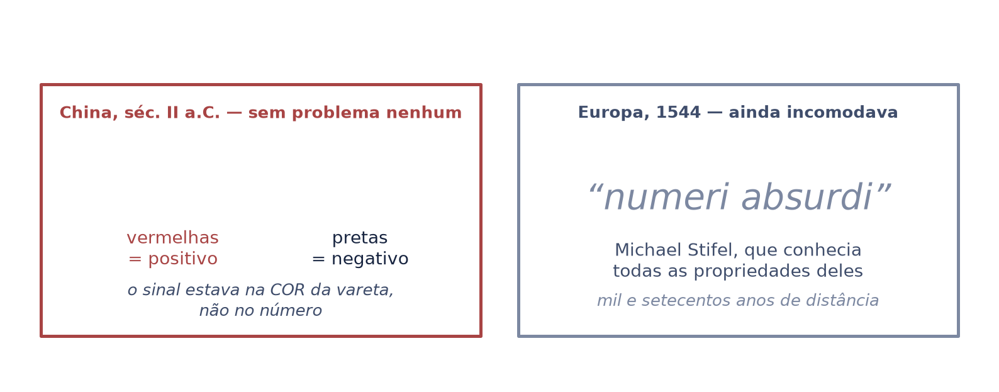
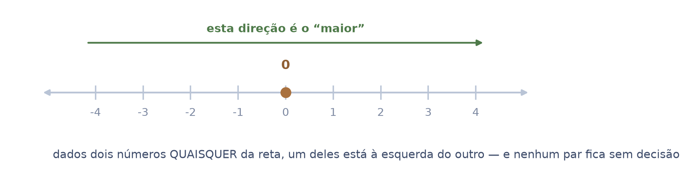
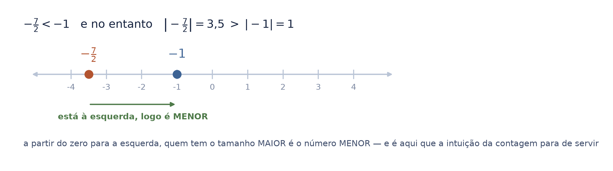
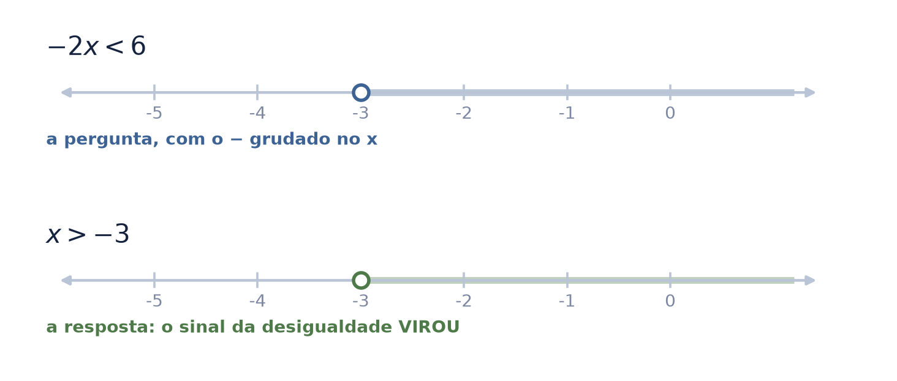
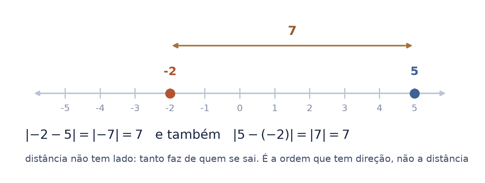
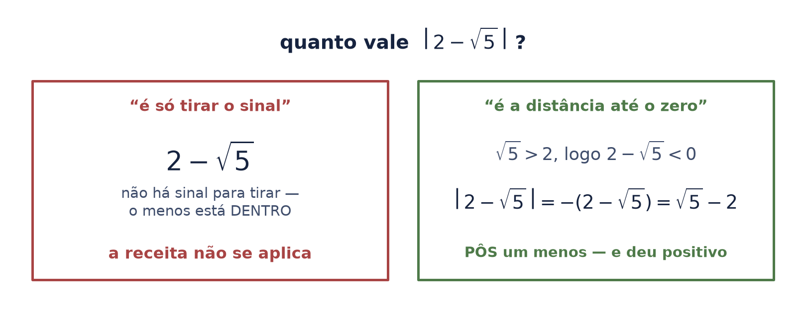
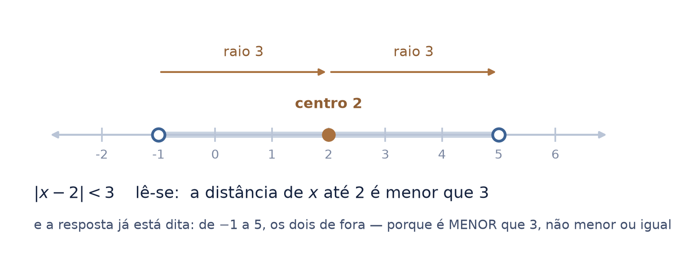
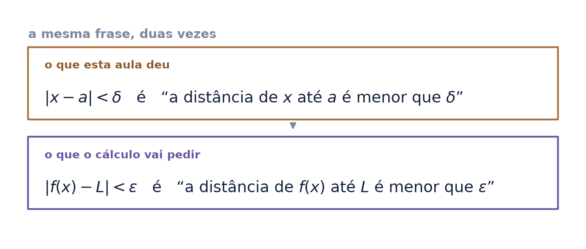
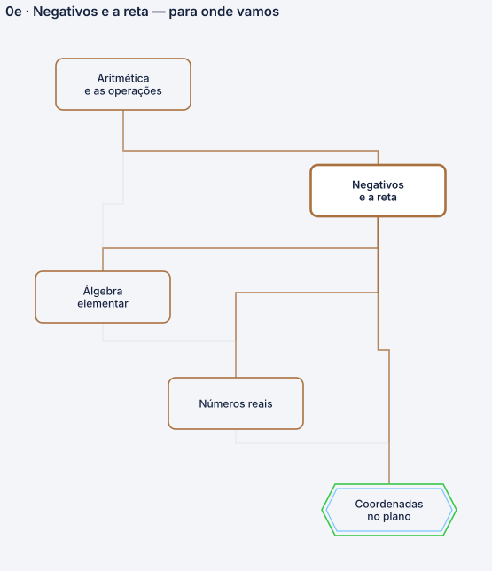

a reta não decora os números: é onde eles ganham ordem e distância — e as duas não são a mesma coisa
O seminário 1 já mostrou o oposto — que subtrair é somar o oposto, que o inteiro foi inventado para o oposto existir, e por que menos com menos dá mais. Nada disso se repete aqui.
Este pega o que sobrou e ninguém entrega: o que acontece com a palavra “maior” quando você passa do zero para a esquerda, e por que módulo não é “tirar o sinal”.
Autor · Mateus Felipe Alkimim Pereira
Coautora · Sara Catiele Nogueira Pereira
Orientador · Rosivaldo Antônio Gohnan
| \(-x\) | lê-se “o oposto de \(x\)”. É um objeto — o número que somado a \(x\) dá zero. Não é “\(x\) negativo”: se \(x\) já for negativo, \(-x\) é positivo |
| \(a - b\) | lê-se “\(a\) menos \(b\)”. É uma operação — e o seminário 1 mostrou que ela é \(a + (-b)\) |
| \(a < b\) | lê-se “\(a\) é menor que \(b\)”, e quer dizer “\(a\) está à esquerda de \(b\) na reta” — nada além disso |
| \(|x|\) | lê-se “módulo de \(x\)” ou “valor absoluto de \(x\)”. É a distância de \(x\) até o zero |
| \(|a - b|\) | lê-se “módulo de \(a\) menos \(b\)”, e é a distância entre \(a\) e \(b\) |
o mesmo traço faz três trabalhos: oposto (\(-x\)), subtração (\(a-b\)) e parte do numeral (\(-3\)). A folha inteira depende de não confundi-los.
Do oposto, que o seminário 1 construiu. Não usa função, não usa gráfico, não usa geometria — e não repete a regra dos sinais, que já está lá como teorema.
A leitura de \(|x-a| < \delta\) como “a distância de \(x\) até \(a\) é pequena”. É a frase inteira da definição de limite, e o arco do cálculo a cobra na primeira aula.
Os chineses calculavam com varetas: vermelhas para o positivo, pretas para o negativo. O sinal morava na cor do objeto, não dentro do número — e por isso o negativo não lhes deu trabalho nenhum.
Mil e setecentos anos depois, na Europa, Michael Stifel conhecia todas as propriedades deles e ainda assim os chamava de “numeri absurdi”. O que incomodava não era a conta: era admitir que aquilo fosse um número.
“A ideia de números negativos parece não ter causado muita dificuldade aos chineses, porque eles estavam acostumados a calcular com dois conjuntos de varetas — um vermelho para coeficientes positivos, um preto para negativos.”

Pôr os números numa reta é afirmar duas coisas de uma vez. A primeira é que existe uma ordem: dados dois números quaisquer, um deles está à esquerda do outro.
A segunda é que essa ordem não deixa buraco de decisão — não há par de números sobre o qual a reta se cale. É isso, e só isso, que \(a < b\) quer dizer: \(a\) está à esquerda.
“menor” deixa de ser uma impressão de tamanho e vira uma posição. A troca parece pequena e é ela que sustenta a folha seguinte.

Contando laranjas, "maior" e "mais longe do zero" são a mesma coisa. Passe para a esquerda do zero e as duas se separam: \(-\tfrac{7}{2}\) é menor que \(-1\), e no entanto seu tamanho é três vezes e meia maior.
Não há paradoxo — há duas perguntas diferentes sendo feitas à mesma reta. Onde está? é ordem. Quão longe do zero? é distância. A reta responde às duas, e as respostas divergem em metade dela.
“A imagem de menos sete meios. Se você dividir 7 por 2 […] isso é 3 inteiros e mais 1[/2], ou 3,5. E 3,5 é… negativo é menor do que [menos um].”

Multiplicar todo mundo por um número negativo é refletir a reta no zero: quem estava à esquerda passa para a direita. Se a ordem inverte para todos, ela inverte também na desigualdade.
Por isso \(-2x < 6\) vira \(x > -3\), e não \(x < -3\). A regra que se decora — "ao dividir por negativo, inverta o sinal" — é essa reflexão, dita de outro jeito.
e é conferível num ponto só: em \(x=-4\), \(-2x = 8\), que não é menor que 6. O \(-4\) está fora, como \(x > -3\) manda.

A distância entre dois pontos da reta é \(|a-b|\), e a ordem em que você os toma não importa: de \(-2\) até \(5\) são sete, e de \(5\) até \(-2\) são os mesmos sete.
É a diferença entre as duas coisas que a reta carrega. A ordem tem direção — trocar \(a\) por \(b\) troca o sentido da desigualdade. A distância não tem, e é o módulo que apaga o sentido.
“A distância, por exemplo, de \(x\) [a] \(y\) é, na verdade, o [módulo] de \(x\) menos \(y\). […] A distância de \(x\) até zero […] é exatamente módulo de \(x\).”

“Tirar o sinal” funciona enquanto o número vem escrito com um sinal para tirar. Escreva \(\left|\,2-\sqrt{5}\,\right|\) e a receita não tem onde pegar: não há menos na frente, e o conteúdo é negativo.
Pela definição a conta sai sozinha. Como \(\sqrt{5} > 2\), o de dentro é negativo, e o módulo é o oposto dele: \(\sqrt{5}-2\). Foi preciso pôr um menos para chegar a um número positivo.
“A raiz de cinco é maior do que dois […] então dois menos a raiz de cinco [é] um número negativo. […] O módulo dele, no fundo, é menos esse número. E menos vezes menos é mais.”

\(|x-2| < 3\) não pede conta: pede leitura. Ela diz que a distância de \(x\) até 2 é menor que 3 — e quem está a menos de 3 do 2 são exatamente os números entre \(-1\) e \(5\).
Os dois nomes que o professor usa fecham a folha: o 2 é o centro, o 3 é o raio. Um intervalo é um centro e uma tolerância em torno dele — e é assim que ele será usado daqui para a frente.
as pontas ficam de fora porque a desigualdade é estrita: em \(x=5\) a distância é 3, e 3 não é menor que 3.

A definição de limite assusta pela quantidade de símbolos, e não pela ideia. Desmontada, ela é a mesma frase desta aula, dita duas vezes: uma sobre o que entra, outra sobre o que sai.
Quem lê \(|x-a| < \delta\) como “a distância de \(x\) até \(a\) é menor que \(\delta\)” já entendeu metade. A outra metade é \(|f(x)-L| < \varepsilon\), que é a mesma leitura com outros nomes.
Ele passa da desigualdade com módulo para o \(\varepsilon\)-\(\delta\) sem trocar de assunto — porque não é outro assunto. O degrau que costuma parecer um abismo é uma frase relida.

| uma ordem | \(a < b\) é “\(a\) está à esquerda”, e nenhum par fica sem decisão |
| uma separação | “maior” e “mais longe do zero” deixam de coincidir na metade esquerda |
| uma reflexão | multiplicar por negativo vira a fila — daí a desigualdade inverter |
| uma distância | \(|a-b|\), que não tem lado |
| uma definição | \(|x|\) é distância até o zero, não “tirar o sinal” |
| uma leitura | \(|x-a| < r\) é um intervalo: centro e raio |
Este nó da base é consumido pelos números reais e pelas coordenadas no plano — e é por eles que ele chega aos dois troncos.

Abrimos dizendo que a reta não decora os números. O que ela faz é responder a duas perguntas diferentes sobre eles: onde está — que é ordem — e quão longe do zero — que é distância. Do zero para a direita as duas respostas concordam, e é por isso que a escola pode confundi-las por anos sem que ninguém perceba.
Do zero para a esquerda elas divergem, e a divergência tem nome: \(-\tfrac{7}{2}\) é o menor dos dois e o maior em tamanho. Quem separa as duas perguntas lê \(|x-a| < \delta\) na primeira vez que vê.
A construção de \(\mathbb{Z}\) a partir de \(\mathbb{N}\), a demonstração de que a ordem é compatível com a soma e o produto, a completude da reta — que é dos números reais — e desigualdade com duas incógnitas.
e não repete o oposto nem a regra dos sinais: são do seminário 1, que já existe e faz os dois como teorema.